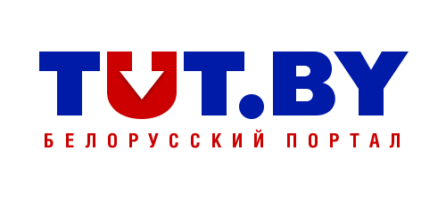

СМИ о нас:
14 октября 2016
agriculture.by
Холдинг «Амкодор» построит завод в Колодищах совместно с китайскими корпорациями CITIC Group и Sinomach
Читать полностью
15 октября 2016
belaruspartisan.org
"Амкодор" нам обеспечит экологический Армагеддон": жители Колодищей — против завода.
Читать полностью

30 мая 2017
greenbelarus.info
Против строительства завода «Амкодор» в Колодищах выступили больше 1000 жителей.
Читать полностью
29 июля 2017
ej.by
"Амкодор" получит 192 миллиона долларов на строительство нового завода в Колодищах
Читать полностью
24 августа 2017
greenbelarus.info
Колодищанцы против Амкодора. Противостояние продолжается.
Читать полностью

25 октября 2017
tut.by
"Амкодор" нам обеспечит экологический Армагеддон": жители Колодищей — против завода.
Читать полностью
25 октября 2017
21.by
"Амкодор" нам обеспечит экологический Армагеддон": жители Колодищ - против завода
Читать полностью
15 ноября 2017
belsat.eu
Гигант наступает.

24 ноября 2017
Марат Минский
НАРОДНЫЙ ПРОТЕСТ В КОЛОДИЩАХ. Беларусы: "Амкодор" нам обеспечит экологический Армагеддон"
28 ноября 2017
charter97.org
Народный протест в Колодищах: Белорусы бунтуют против «Амкодора»
Читать полностью
29 ноября 2017
onliner.by
В Колодищах ради строительства «Амкодора» планируют вырубить почти 8,5 тысячи деревьев. На заводе уверяют, что все законно
Читать полностью
29 ноября 2017
sputnik.by
Министр природы посетит Колодищи, где планируют строить завод "Амкодор"
Читать полностью
2 декабря 2017
tut.by
Колодищи ждали министра природы с плакатами "Мы за чистый воздух", "Амкодору нет"
Читать полностью
2 декабря 2017
21.by
Колодищи ждали министра природы с плакатами "Мы за чистый воздух", "Амкодору нет"
Читать полностью
4 декабря 2017
svaboda.org
«Няма армагедону». «Амкадор» і Мінпрыроды адкідаюць прэтэнзіі жыхароў Калодзішчаў наконт новага заводу
Читать полностью
8 декабря 2017
svaboda.org
«Будзем стаяць насьмерць». Чаму каладзішчанцы супраць будоўлі новага заводу «Амкадора»
Читать полностью
11 декабря 2017
svaboda.org
Улады ініцыявалі зьмены ў праект пабудовы пад Менскам заводу «Амкадора» пасьля пратэстаў
Читать полностью
11 декабря 2017
charter97.org